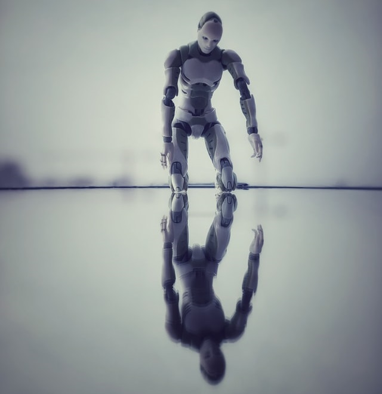

If we could see the future, would we be any different from robots?
In "Story of your life" (Chiang, 1998, p. 305), the character of Louise Banks reflects on the implications on being able to see the future:
Knowledge of the future was incompatible with free will. What made it possible for me to exercise freedom of choice also made it impossible for me to know the future. Conversely, now that I know the future, I would never act contrary to that future
When we talk about robots, one of the distinguishing features that separates them from humans, is our free will. So, if seeing the future is incompatible with free will, and this is what could distinguish us from mere automatons; what would that make of us? In her remark in “Story of your life”, Louise doesn’t seem concerned about this, so maybe free will could be a little overestimated.

A robot with its image reflected on the floor
From https://unsplash.com/, image free for use
From https://unsplash.com/, image free for use